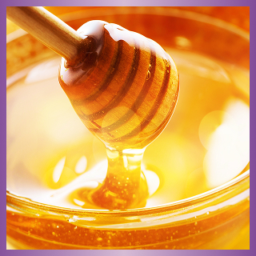
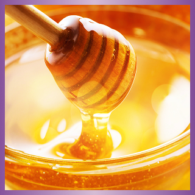

感謝您參加 [Beam Suntory威士忌愛好會集點及延伸活動]，以下為個人資料蒐集告知暨同意事項，在您提供個人資料予本公司前，請充分閱讀下列事項，如您參加本活動並提供個人資料，即視為您已充分閱讀、瞭解並同意以下之相關事項：
一、告知事項：
依據個人資料保護法第八條等相關規定，明列以下告知事項
1. 個人資料蒐集單位：賓三得利股份有限公司(以下稱本公司)。
2. 蒐集之目的：於本公司及關係企業業務經營、辦理行銷活動、消費者或客戶管理與服務、調查統計或研究分析、客服作業、品酒會、廣告行銷、品牌推廣、特別活動通知、理性飲酒推廣事項、抽獎活動、類似契約或其他法律關係等業務必要範圍內為蒐集、處理、利用及國際傳輸。
3. 個人資料之類別：包括個人資料中之識別類（例如辨識個人者中之姓名、住址、聯絡電話、手機號碼、電子信箱、年齡等）、特徵類（如個人描述、身體描述、習慣）、生活品味、其他各類資訊（如未分類之資料）等直接或間接得識別您個人之資料。
4. 個人資料利用對象：本公司及關係企業、本公司所屬集團及提供相關活動、服務或業務之第三人或業務往來之機構（包含本公司或相關企業委託提供委外服務之機構），以及依法令得要求本公司提供個人資料之對象，均可能蒐集、處理、利用及以國際傳輸之方式使用您的個人資訊。
5. 個人資料利用方式、期間及地區：為執行上述特定目的所提供之個人資料，於特定目的存續期間及法令規定之期限內，以有利於達成前述特定目的之方式（包括但不限於紙本、電子文件、電話、簡訊、電子郵件、通訊軟體傳輸或資料庫），於中華民國境內、境外及法令許可之範圍內加以蒐集、處理、利用及國際傳輸。
6. 依個人資料保護法第三條規定得行使之權利及方式：您可依照個人資料保護法第三條規定，就您的個人資料向本公司提出申請，以查詢、閱覽、製給複製本；或補充／更正、請求停止蒐集、處理、利用或刪除個人資料內容之一部或全部（註：個人資料保護法第十四條規定，本活動參與者申請查詢、閱覽、製給複製本時，本公司將可能酌收您閱覽或製給複製本之必要成本費用），且您於行使前開權利時，應符合個人資料保護法規定之相關要件。
二、當您填寫個人資料後，以任何方式交由至本公司收執時，均視為您已知悉並同意本公司有蒐集、處理或利用您個人資料之效果，並同意本公司得將您所填寫之個人資料，供本公司於辦理本活動之特定目的必要範圍內為蒐集、處理、利用及國際傳輸您的個人資料。
三、您得自由選擇是否提供相關個人資料及類別，惟您所拒絕提供之個人資料及類別，如果是辦理業務審核或活動所需之資料，本公司可能無法進行必要之業務審核或您將喪失參與本公司辦理之各項活動之權益，敬請見諒。
 
